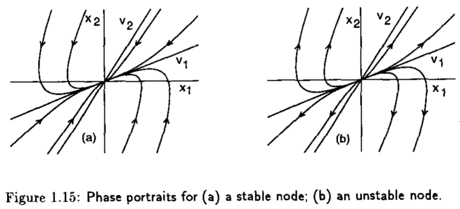
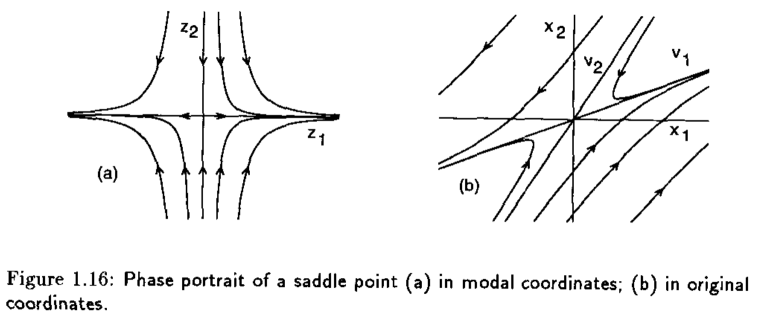
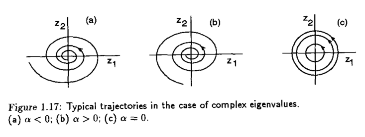
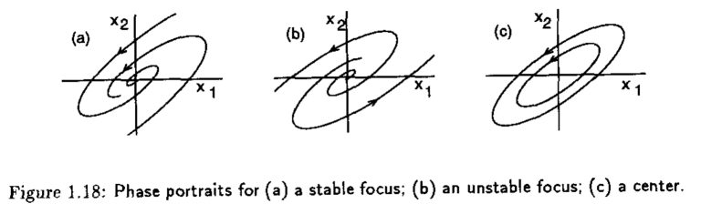
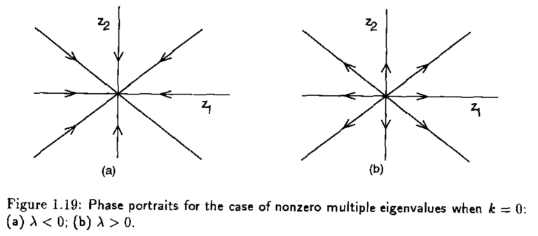
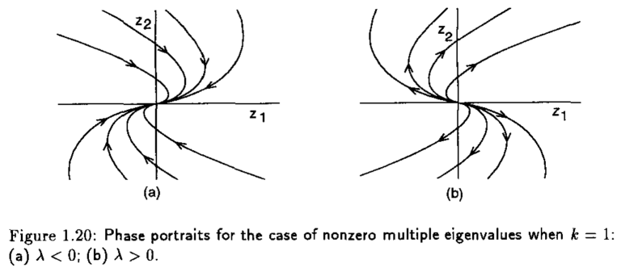
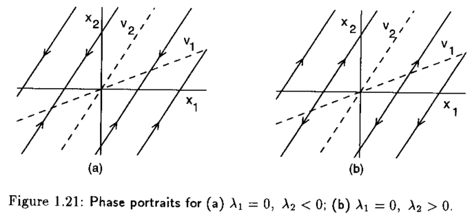
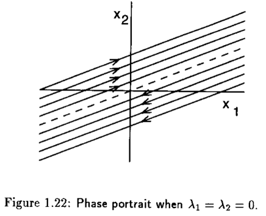

Análisis de la estabilidad de sistemas dinámicos linealizados#
Considere un sistema LTI como se muestra en la Ec. (49) donde \(A\) es una matriz real de dimensión \(2\times 2\). La solución a este sistema con una condición inicial \(x_{0}\) está dada por la siguiente ecuación
donde \(J_{r}\) es la forma real de Jordan de \(A\) y \(M\) es una matriz real no singular tal que \(M^{-1}AM = J_{r}\). Dependiendo de los eigenvalores \(\lambda_{i}\) de la matriz \(A\), la forma de Jordan puede tomar los siguientes casos
donde \(k\) puede tomar el valor de \(0\) o \(1\).
Caso I. Ambos eigenvalores son reales: \(\lambda_{1} \neq \lambda_{2} \neq 0\).#
El sistema tiene dos eigenvectores reales \(v_{1}\) y \(v_{2}\) asociados con \(\lambda_{1}\) y \(\lambda_{2}\), respectivamente. Donde el sistema es transformado en dos ecuaciones diferenciales de primer orden después de un cambio de coordenadas \(z=M^{-1}x\), i.e.
cuya solución está dada como sigue, para las condiciones iniciales \((z_{10},z_{20})\)
Cuando \(\lambda_{2}<\lambda_{1}<0\), el retrato fase tiene la forma de la Figura 1.15(a), donde \(x=0\) es llamado nodo estable. Por otro lado, si \(\lambda_{2}>\lambda_{1}>0\), \(x=0\), el retrato fase se muestra en la Figura 1.15(b) y se le conoce como nodo inestable.

Si el sistema tiene eigenvalores con signos opuestos, esto es \(\lambda_{2} < 0 \lambda_{1}\), decimos que \(\lambda_{2}\) es un eigenvalor estable y \(\lambda_{1}\) inestable. Por consiguiente, el retrato fase que corresponde a esta trayectoria se muestra en la Figura 1.16(a).

Caso II. Eigenvalores complejos: \(\lambda_{1,2} = \alpha \pm j\beta\)#
El sistema \(\dot{x}=Ax\) después de la transformación de coordenadas \(z = M^{-1}x\) tiene la forma
Puesto que la solución a este sistema es oscilatoria, se puede expresar en coordenadas polares como sigue
teniendo dos ecuaciones diferenciales de primer orden desacopladas
La solución de este sistema, para una condición inicial \((r_{0},\theta_{0})\) es
Dependiendo del valor de \(\alpha\), el retrato fase puede tomar alguna de las siguientes formas

Nota
El punto de equilibrio \(x=0\) es un foco estable si \(\alpha<0\), foco inestable si \(\alpha>0\) y centro si \(\alpha=0\) como se muestra a continuación

Caso III. Eigenvalores múltiples diferentes de cero: \(\lambda_{1}=\lambda_{2} = \lambda \neq 0\)#
Para este caso, el sistema \(\dot{x}=Ax\) después de un cambio de coordenadas toma la siguiente forma
cuya solución, con c.i. \((z_{10},z_{20})\) está dada como sigue
Los retrato fase para este caso, considerando \(k=0\) y \(k=1\) se muestran en la siguiente figura

Aquí, el punto de equilibrio \(x=0\) se le conoce como nodo estable si \(\lambda < 0\) y nodo inestable si \(\lambda >0\). Las trayectorias se muestran en la siguiente representación

Caso IV. Uno o ambos autovalores son cero#
Cuando \(\lambda_{1}=0\) y \(\lambda_{2}\neq 0\), el sistema después de una transformación de coordenadas tiene la siguiente representación
cuya solución es
Cuano ambos eigenvalores se encuentran en el origen y se aplica una transformación del coordenadas al sistema \(\dot{x}=Ax\), tenemos
cuya solución está dada como sigue
Las trayectorias que forman el retrato fase para estos casos en particular se muestran en la siguientes figuras


Ejemplo
Clasifique los puntos de equilibrio del circuito de diodo tunel (51) y determine su estabilidad.
Ejemplo
Clasifique los puntos de equilibrio del sistema de péndulo simple (52) y determine su estabilidad.